Project 1 – Oxygen Budget
We saw in class that the highest concentrations of dissolved inorganic carbon (DIC) are in the mid-depth Pacific ocean.
- In Absalon, under files, download
theocean.ncand plot the global distribution of DIC at 2000m depth, in an east-west cut, and a north-south cut across the Pacific. The file contains output of a commonly used climate model (Nielsen et al. 2019, Paleoceanography). It helps to usexarray, and a primer for how to use it to analyze model simulations is provided at: https://veros.readthedocs.io/en/latest/tutorial/analysis.html - Use the Reynolds averaged tracer equation to determine the main sources and sinks of DIC in the mid-depth North Pacific (the values for horizontal and vertical turbulent diffusivity are 800 and 1-e5 m²/s, respectively). Pay attention to the units!
- Describe in your own words and based on your analysis above what explains the DIC maximum in the North Pacific.
- Form groups of 2 or 3 and hand in the answers as PDF by Sunday, midnight (i.e. email to mjochum@nbi.dk).
Staggered Grids
We must choose a grid in such a way that both volume \(V_1\) and \(V_2\) can be accommodated and the
natural way to do
that is take \(u\) and \(v\) in different nodal points.
Such an arrangement of nodal point is called a staggered grid
When discretizing a scalar equation, it is often choose the grid that the boundary conditions can be easily implemented.

- Fluid variables live on “Arakawa Grids” (Arakawa and Lamb 1977)
- Variables’ positions are offset
- Finite-volume calculations must account for this to get correct results
class ArakawaCGrid(object):
def __init__(self, nx, ny, Lx, Ly):
super(ArakawaCGrid, self).__init__()
self.nx = nx
self.ny = ny
self.Lx = Lx
self.Ly = Ly
self.true_slice = [slice(1,-1)]*2 # slice of state arrays w/out BCs
# Arakawa-C grid
# +-- v --+
# | | * (nx, ny) phi points at grid centres
# u phi u * (nx+1, ny) u points on vertical edges (u[0] and u[nx] are boundary values)
# | | * (nx, ny+1) v points on horizontal edges
# +-- v --+
self._u = np.zeros((nx+3, ny+2), dtype=np.float)
self._v = np.zeros((nx+2, ny+3), dtype=np.float)
self._phi = np.zeros((nx+2, ny+2), dtype=np.float)
self.dx = dx = float(Lx) / nx
self.dy = dy = float(Ly) / ny
# positions of the nodes
self.ux = (-Lx/2 + np.arange(nx+1)*dx)[:, np.newaxis]
self.vx = (-Lx/2 + dx/2.0 + np.arange(nx)*dx)[:, np.newaxis]
self.vy = (-Ly/2 + np.arange(ny+1)*dy)[np.newaxis, :]
self.uy = (-Ly/2 + dy/2.0 + np.arange(ny)*dy)[np.newaxis, :]
self.phix = self.vx
self.phiy = self.uy
self.shape = self.phi.shape
self._shape = self._phi.shapeCommands and Codes
The pwd command writes to standard output the full path name of your current directory (from the root directory). All directories are separated by a / (slash). Check the current directory:
!pwdList files in the current directory:
!lsFor example, if you want to check inside the erda_mount directory:
!ls erda_mount/To inspect the NetCDF file theocean.nc located in the same folder as your notebook (/home/jovyan/erda_mount), you can do the following directly within a notebook cell:
!ls /home/jovyan/erda_mount/theocean.nc # Verify the file exists firstQuickly inspect the contents using Python and the xarray package, here is a detailed user guide for it
!pip install xarrayimport xarray as xr
# Open and inspect the NetCDF file
ds = xr.open_dataset('/home/jovyan/erda_mount/theocean.nc')
# Show dataset details
print(ds)
# Display variables specifically
print("\nData Variables:")
print(ds.data_vars)To check whether a specific variable (e.g., DIC) exists in an opened xarray dataset and retrieve detailed information about it, you can do the following:
import xarray as xr
# Load the dataset
ds = xr.open_dataset('/home/jovyan/erda_mount/theocean.nc')
# Check if 'DIC' exists in the dataset
if 'DIC' in ds.variables:
print("'DIC' variable found!\n")
# Print detailed info about the 'DIC' variable
print(ds['DIC'])
else:
print("'DIC' variable not found in the dataset.") 'DIC' variable found!Size: 3MB [696000 values with dtype=float32] Coordinates: * time (time) object 8B 1950-07-16 21:59:59.999997 * z_t (z_t) float32 240B 500.0 1.5e+03 2.5e+03 ... 5.125e+05 5.375e+05 ULONG (nlat, nlon) float64 93kB ... ULAT (nlat, nlon) float64 93kB ... TLONG (nlat, nlon) float64 93kB ... TLAT (nlat, nlon) float64 93kB ... Dimensions without coordinates: nlat, nlon Attributes: long_name: Dissolved Inorganic Carbon units: mmol/m^3 grid_loc: 3111 cell_methods: time: mean
For printing all variables and their long_name
import xarray as xr
# Open the NetCDF file
ds = xr.open_dataset('/home/jovyan/erda_mount/theocean.nc')
# Print all variables and their long_name
print("=== Variables and Their Descriptions ===\n")
for var in ds.variables:
long_name = ds[var].attrs.get('long_name', 'No long_name')
print(f"{var:20}: {long_name}")
=== Variables and Their Descriptions ===
time_bound : boundaries for time-averaging interval
moc_components : MOC component names
transport_components: T,S transport components
transport_regions : regions for all transport diagnostics
time : time
z_t : depth from surface to midpoint of layer
z_t_150m : depth from surface to midpoint of layer
z_w : depth from surface to top of layer
z_w_top : depth from surface to top of layer
z_w_bot : depth from surface to bottom of layer
lat_aux_grid : latitude grid for transport diagnostics
moc_z : depth from surface to top of layer
dz : thickness of layer k
dzw : midpoint of k to midpoint of k+1
ULONG : array of u-grid longitudes
ULAT : array of u-grid latitudes
TLONG : array of t-grid longitudes
TLAT : array of t-grid latitudes
To print detailed metadata of each variable in a NetCDF file, such as its data type, dimensions, and attributes (like long_name, units, _FillValue, missing_value, _ChunkSizes), you can use the following code
import xarray as xr
# Open dataset
ds = xr.open_dataset('/home/jovyan/erda_mount/theocean.nc')
# Loop through all variables
for var in ds.variables:
da = ds[var]
print(f"{da.dtype} {var}({', '.join(f'{dim}={ds.dims[dim]}' for dim in da.dims)});")
for attr, val in da.attrs.items():
print(f" :{attr} = {val!r};")
print() # Blank line between variables
object time_bound(time=1, d2=2);
:long_name = 'boundaries for time-averaging interval';
:cell_methods = 'time: mean';
|S256 moc_components(moc_comp=3);
:long_name = 'MOC component names';
:units = '';
|S256 transport_components(transport_comp=5);
:long_name = 'T,S transport components';
:units = '';
|S256 transport_regions(transport_reg=2);
:long_name = 'regions for all transport diagnostics';
:units = '';
object time(time=1);
:long_name = 'time';
:bounds = 'time_bound';
:cell_methods = 'time: mean';
float32 z_t(z_t=60);
:long_name = 'depth from surface to midpoint of layer';
:units = 'centimeters';
:positive = 'down';
:valid_min = np.float32(500.0);
:valid_max = np.float32(537500.0);
float32 z_t_150m(z_t_150m=15);
:long_name = 'depth from surface to midpoint of layer';
:units = 'centimeters';
:positive = 'down';
:valid_min = np.float32(500.0);
:valid_max = np.float32(14500.0);
float32 z_w(z_w=60);
:long_name = 'depth from surface to top of layer';
:units = 'centimeters';
:positive = 'down';
:valid_min = np.float32(0.0);
:valid_max = np.float32(525000.94);
float32 z_w_top(z_w_top=60);
:long_name = 'depth from surface to top of layer';
:units = 'centimeters';
:positive = 'down';
:valid_min = np.float32(0.0);
:valid_max = np.float32(525000.94);
float32 z_w_bot(z_w_bot=60);
:long_name = 'depth from surface to bottom of layer';
:units = 'centimeters';
:positive = 'down';
:valid_min = np.float32(1000.0);
:valid_max = np.float32(549999.06);
float32 lat_aux_grid(lat_aux_grid=105);
:long_name = 'latitude grid for transport diagnostics';
:units = 'degrees_north';
:valid_min = np.float32(-80.26017);
:valid_max = np.float32(90.0);
float32 moc_z(moc_z=61);
:long_name = 'depth from surface to top of layer';
:units = 'centimeters';
:positive = 'down';
:valid_min = np.float32(0.0);
:valid_max = np.float32(549999.06);
float32 dz(z_t=60);
:long_name = 'thickness of layer k';
:units = 'centimeters';
float32 dzw(z_w=60);
:long_name = 'midpoint of k to midpoint of k+1';
:units = 'centimeters';
float64 ULONG(nlat=116, nlon=100);
:long_name = 'array of u-grid longitudes';
:units = 'degrees_east';
float64 ULAT(nlat=116, nlon=100);
:long_name = 'array of u-grid latitudes';
:units = 'degrees_north';
float64 TLONG(nlat=116, nlon=100);
:long_name = 'array of t-grid longitudes';
:units = 'degrees_east';
float64 TLAT(nlat=116, nlon=100);
:long_name = 'array of t-grid latitudes';
:units = 'degrees_north';
But if you plot it directly, the projection might seem incorrect due to the lack of proper geographic coordinates, suggest a need for proper coordinate projection handling (but this can be unnecessary depending on the goal and model). Based on the output, some effort regarding color bar handling is also needed for this assignment.
import xarray as xr
import matplotlib.pyplot as plt
# Load the dataset
ds = xr.open_dataset('/home/jovyan/erda_mount/theocean.nc')
# Select surface DIC (assuming variable DIC is 4D: time, z, y, x)
surface_DIC = ds['DIC'].isel(time=-1, z_t=0)
# Plotting the map of sea surface DIC
fig, ax = plt.subplots(figsize=(6, 5), dpi = 300)
surface_DIC.plot.pcolormesh(
ax=ax,
cmap='coolwarm', # choose colormap here
shading='auto',
cbar_kwargs={'label': 'DIC (mol m$^{-3}$)'}
)
ax.set_title('Sea Surface DIC')
ax.set_xlabel('Longitude')
ax.set_ylabel('Latitude')
plt.tight_layout()
# Save the figure at the save folder
plt.savefig('./sea_surface_DIC.png', transparent=True)
plt.show()Here's a quick cell you can run to inspect the coordinate system (dimensions, variable names, and their attributes) of your NetCDF file (theocean.nc)
import numpy as np
ds = xr.open_dataset('/home/jovyan/erda_mount/theocean.nc')
# Print coordinates specifically
print("\n--- Coordinate Variables ---")
for coord in ds.coords:
print(f"{coord}: {ds.coords[coord].dims} {ds.coords[coord].shape}")
# Print variable names and their dimensions
print("\n--- Data Variables ---")
for var in ds.data_vars:
print(f"{var}: {ds[var].dims} {ds[var].shape}")
# Print attributes of TLAT and TLONG if they exist
if 'TLAT' in ds:
print("\nTLAT attributes:", ds['TLAT'].attrs)
if 'TLONG' in ds:
print("\nTLONG attributes:", ds['TLONG'].attrs)
# Print random sample lat/lon points to verify
print("\n--- Sample Latitude and Longitude Points ---")
TLAT = ds['TLAT'].values
TLONG = ds['TLONG'].values
nlat, nlon = TLAT.shape
for _ in range(5):
i = np.random.randint(0, nlat)
j = np.random.randint(0, nlon)
print(f"Index (i={i}, j={j}) -> Lat: {TLAT[i, j]:.2f}°, Lon: {TLONG[i, j]:.2f}°")
--- Sample Latitude and Longitude Points ---
Index (i=98, j=26) -> Lat: 74.99°, Lon: 16.65°
Index (i=69, j=12) -> Lat: 21.58°, Lon: 6.38°
Index (i=54, j=6) -> Lat: 3.38°, Lon: 344.90°
Index (i=47, j=35) -> Lat: -0.90°, Lon: 89.30°
Index (i=50, j=94) -> Lat: 0.90°, Lon: 301.70°
Convert the domain from [0, 360] to [-180, 180], which is easier to interpret for many ocean regions.
# Surface map (latitude-longitude at surface level z_t=0)
dic_surface = ds['DIC'].isel(time=time_index, z_t=0)
lat_2d = ds['TLAT'].values
lon_2d = ds['TLONG'].values
lon_2d = np.where(lon_2d > 180, lon_2d - 360, lon_2d) # Convert to [-180, 180]Choosing the appropriate colorbar normalization is important for accurately visualizing the range and structure of values in climate model output.
Matplotlib provides a rich set of beautiful colormaps for oceanography with excellent examples.
Food for thought: Why Should Engineers and Scientists Be Worried About Color?
import matplotlib.pyplot as plt
import numpy as np
from matplotlib import colors
# Create sample data
N = 100
X, Y = np.mgrid[-3:3:complex(0, N), -2:2:complex(0, N)]
Z1 = np.exp(-X**2 - Y**2)
Z2 = np.exp(-(X - 1)**2 - (Y - 1)**2)
Z = (Z1 - Z2) * 2
# Normalize options
vmin, vmax = -1.0, 1.0
norms = {
'Linear': None,
'LogNorm': colors.LogNorm(vmin=Z[Z > 0].min(), vmax=Z.max()),
'PowerNorm (quartic γ=0.25)': colors.PowerNorm(gamma=0.25, vmin=vmin, vmax=vmax),
'PowerNorm (γ=0.5)': colors.PowerNorm(gamma=0.5, vmin=vmin, vmax=vmax),
'TwoSlopeNorm (center=0)': colors.TwoSlopeNorm(vmin=vmin, vcenter=0, vmax=vmax),
'Quantile Bins': colors.BoundaryNorm(boundaries=np.quantile(Z, np.linspace(0, 1, 10)), ncolors=256)
}
# Plotting
plt.rcParams['text.color'] = '#d6ebff'
plt.rcParams['axes.labelcolor'] = '#d6ebff'
plt.rcParams['xtick.color'] = '#d6ebff'
plt.rcParams['ytick.color'] = '#d6ebff'
plt.rcParams['axes.edgecolor'] = '#d6ebff'
fig, axs = plt.subplots(nrows=3, ncols=2, figsize=(14, 12), dpi = 300)
axs = axs.ravel()
fig.patch.set_alpha(0)
for ax in axs:
ax.set_facecolor('none')
for ax, (name, norm) in zip(axs, norms.items()):
# LogNorm only works on positive values
if name == 'LogNorm':
pcm = ax.pcolormesh(X, Y, np.abs(Z), norm=norm, cmap='coolwarm', shading='auto')
else:
pcm = ax.pcolormesh(X, Y, Z, norm=norm, cmap='coolwarm', shading='auto')
fig.colorbar(pcm, ax=ax)
ax.set_title(name)
ax.set_aspect('equal')
plt.suptitle("Colorbar Normalization Examples", fontsize=16)
plt.tight_layout(rect=[0, 0, 1, 0.97])
plt.show()Boxcar Smoothing
Boxcar smoothing is a simple and effective smoothing technique that acts like a low-pass filter by removing high-frequency noise from data. It sums several neighboring points within a "box" window, averages them, and plots the averaged value at the center position.
import numpy as np
import matplotlib.pyplot as plt
from matplotlib.patches import Rectangle
# --- Generate clean sine signal ---
N = 20
dt = 1.0
A = 1.0
f = 0.1
omega = 2 * np.pi * f
timesteps = np.linspace(1, N, N)
signal = A * np.sin(omega * timesteps)
# --- Add noise ---
np.random.seed(1)
noise = 0.3 * (np.random.rand(N) - 0.5)
noisy_signal = signal + noise
# --- Boxcar smoothing ---
def boxcar_smooth(x, w):
smoothed = np.zeros_like(x)
half_w = w // 2
for i in range(len(x)):
left = max(0, i - half_w)
right = min(len(x), i + half_w + 1)
smoothed[i] = np.mean(x[left:right])
return smoothed
w = 5
smoothed_signal = boxcar_smooth(noisy_signal, w=w)
# --- Plot with styled settings ---
axis_color = '#d6ebff'
noise_color = 'red'
smooth_color = '#66c2ff'
box_color = '#00ffff'
fig, ax = plt.subplots(figsize=(10, 5), dpi=300)
fig.patch.set_alpha(0.0)
ax.set_facecolor('none')
# Scatter noisy and smoothed data
ax.scatter(timesteps, noisy_signal, color=noise_color, s=30, label='Noisy Data', marker='X')
ax.scatter(timesteps, smoothed_signal, color=smooth_color, s=50, label='Smoothed')
# Draw example boxcar windows
for center in [3, 10, 17]:
left = max(0, center - w // 2)
right = min(N, center + w // 2 + 1)
x_min = timesteps[left]
x_max = timesteps[right - 1]
y_min = min(noisy_signal[left:right]) - 0.1
y_max = max(noisy_signal[left:right]) + 0.1
rect = Rectangle((x_min, y_min), x_max - x_min, y_max - y_min,
edgecolor=box_color, facecolor='none', lw=2)
ax.add_patch(rect)
ax.set_title("Boxcar Smoothing", color=axis_color)
ax.set_xlabel("Time", color=axis_color)
ax.set_ylabel("Signal", color=axis_color)
ax.set_ylim(-1.5, 1.5)
ax.grid(True, linestyle='--', color='#3c5c78', alpha=0.6)
# Legend
legend = ax.legend()
legend.get_frame().set_alpha(0.3)
for text in legend.get_texts():
text.set_color(axis_color)
# Axis ticks and spines
ax.tick_params(colors=axis_color)
for spine in ax.spines.values():
spine.set_color(axis_color)
plt.tight_layout()
plt.show()The improvement in signal-to-noise ratio is proportional to the square root of the number of points inside the boxcar, but it comes with a trade-off: \( N-1 \) edge points are lost, and the data density decreases by a fraction of \(\frac{N-1}{N}\). If the boxcar size is too large relative to the data sampling rate, significant features can be smoothed out and lost. Therefore boxcar smoothing is best applied when the data are sampled at a sufficiently high rate compared to the underlying signal variation.
import numpy as np
import matplotlib.pyplot as plt
# --- Generate clean sine signal ---
N = 1000 # Number of samples
dt = 1.0 / 100.0 # 100 samples/sec
A = 5.0 # Amplitude
f = 0.5 # Frequency in Hz
omega = 2 * np.pi * f
timesteps = np.linspace(0.0, N*dt, N)
signal = A * np.sin(omega * timesteps)
# --- Add noise ---
np.random.seed(0) # For reproducibility
noise = 3 * (np.random.rand(N) - 0.5) # Random noise centered around 0
noisy_signal = signal + noise
# --- Boxcar smoothing ---
def boxcar_smooth(x, w):
"""Smooth 1D array x using a boxcar (moving average) of width w."""
smoothed = np.zeros_like(x)
half_w = w // 2
for i in range(len(x)):
left = max(0, i - half_w)
right = min(len(x), i + half_w + 1)
smoothed[i] = np.mean(x[left:right])
return smoothed
smoothed_signal = boxcar_smooth(noisy_signal, w=13)
# --- Plot noisy vs smoothed with transparent background and styled text ---
axis_color = '#d6ebff' # light blue for axis
noise_color = '#aeeafc' # lighter color for noisy points
fig, axs = plt.subplots(1, 2, figsize=(14, 5), dpi=300)
fig.patch.set_alpha(0.0)
# Plot 1: Noisy Signal
axs[0].set_facecolor('none')
axs[0].plot(timesteps, noisy_signal, '.', color=noise_color, alpha=0.7) # Change color here
axs[0].set_xlim(0, 4)
axs[0].set_ylim(-8, 8)
axs[0].set_title("Noisy Signal", color=axis_color)
axs[0].tick_params(colors=axis_color)
axs[0].set_xlabel("Time", color=axis_color)
axs[0].set_ylabel("Amplitude", color=axis_color)
for spine in axs[0].spines.values():
spine.set_color(axis_color)
# Plot 2: Smoothed Signal
axs[1].set_facecolor('none')
axs[1].plot(timesteps, smoothed_signal, 'r')
axs[1].set_xlim(0, 4)
axs[1].set_ylim(-8, 8)
axs[1].set_title("Smoothed Signal (Boxcar w=13)", color=axis_color)
axs[1].tick_params(colors=axis_color)
axs[1].set_xlabel("Time", color=axis_color)
axs[1].set_ylabel("Amplitude", color=axis_color)
for spine in axs[1].spines.values():
spine.set_color(axis_color)
plt.tight_layout()
plt.show()The code below shows how to apply the boxcar smoothing to 2D heatmap data before plotting, exactly like what we did for 1D signals
import matplotlib.pyplot as plt
import numpy as np
from matplotlib import colors
# --- Generate Sample 2D Data ---
N = 100
X, Y = np.mgrid[-3:3:complex(0, N), -2:2:complex(0, N)]
Z1 = np.exp(-X**2 - Y**2)
Z2 = np.exp(-(X - 1)**2 - (Y - 1)**2)
Z = (Z1 - Z2) * 2
# --- Boxcar Smoothing 2D ---
def boxcar_smooth_2d(data, w):
smoothed = np.zeros_like(data)
half_w = w // 2
for i in range(data.shape[0]):
for j in range(data.shape[1]):
left_i = max(0, i - half_w)
right_i = min(data.shape[0], i + half_w + 1)
left_j = max(0, j - half_w)
right_j = min(data.shape[1], j + half_w + 1)
smoothed[i, j] = np.mean(data[left_i:right_i, left_j:right_j])
return smoothed
Z_smoothed = boxcar_smooth_2d(Z, w=50)
# --- Quantile Bin Normalization ---
boundaries = np.quantile(Z, np.linspace(0, 1, 10))
quantile_norm = colors.BoundaryNorm(boundaries=boundaries, ncolors=256)
# --- Plotting Style Settings ---
plt.rcParams['text.color'] = '#d6ebff'
plt.rcParams['axes.labelcolor'] = '#d6ebff'
plt.rcParams['xtick.color'] = '#d6ebff'
plt.rcParams['ytick.color'] = '#d6ebff'
plt.rcParams['axes.edgecolor'] = '#d6ebff'
fig, axs = plt.subplots(1, 2, figsize=(14, 6), dpi=300)
fig.patch.set_alpha(0)
for ax in axs:
ax.set_facecolor('none')
# --- Plot Original ---
pcm1 = axs[0].pcolormesh(X, Y, Z, norm=quantile_norm, cmap='coolwarm', shading='auto')
fig.colorbar(pcm1, ax=axs[0])
axs[0].set_title('Original Data', fontsize=14)
axs[0].set_aspect('equal')
# --- Plot Smoothed ---
pcm2 = axs[1].pcolormesh(X, Y, Z_smoothed, norm=quantile_norm, cmap='coolwarm', shading='auto')
fig.colorbar(pcm2, ax=axs[1])
axs[1].set_title('Smoothed Data (Boxcar w=50)', fontsize=14)
axs[1].set_aspect('equal')
plt.suptitle('Boxcar Smoothing on 2D Heatmap (Quantile Normalization)', fontsize=16)
plt.tight_layout(rect=[0, 0, 1, 0.96])
plt.show()